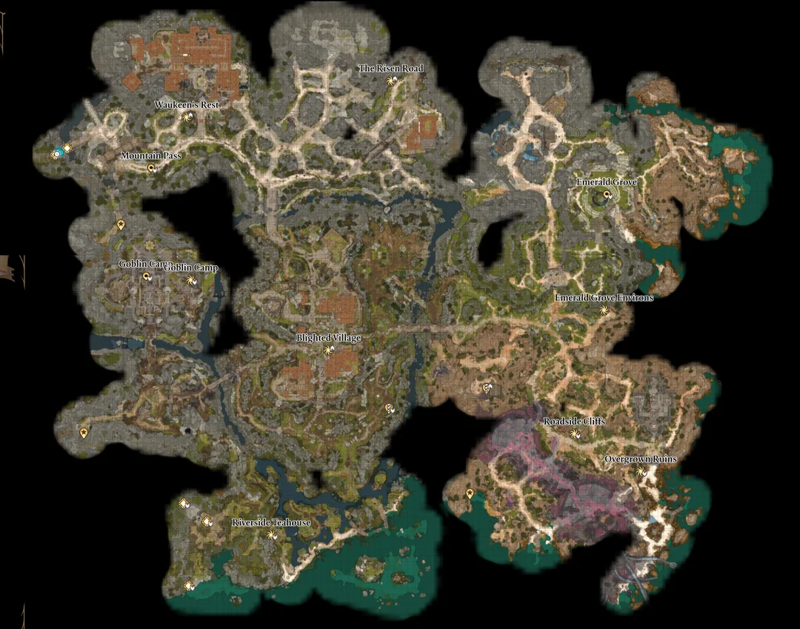

Campaign Map
This map charts the perilous path of Act I. Here, alliances are tested, secrets unearthed, and the seeds of a greater war quietly take root. The Realms whisper and the Chosen begin to walk among them.

Key Locations
- Overgrown Ruins – These crumbled ruins are one of the first dungeon-like areas you encounter. Hidden beneath them lies a mysterious crypt filled with ancient secrets and undead threats. It's the resting place of Withers, a powerful and enigmatic entity who can later assist with reviving party members if you dare awaken him.
- Emerald Grove –A central hub in Act 1 and a crucible of moral choice. The druids and tiefling refugees here are on the brink of civil collapse. Whether you help protect the grove, support the refugees, or side with the Absolute-affiliated goblins will define your reputation and relationships moving forward.
- Blighted Village – An abandoned town turned goblin outpost, this place is crawling with hostiles, traps, and hidden secrets. It represents the growing corruption spreading across the land and holds keys to alternate routes into the goblin stronghold. Its ruined chapel also holds a path down to the Underdark.
- Goblin Camp – One of the major strongholds of the Absolute’s influence in Act 1. You can sneak, fight, or talk your way through this fortress. Choices here can shift the balance of power in the region. Sparking war, forging dark alliances, or freeing potential allies. It’s a morality minefield.
- Mountain Pass – A perilous highland route that leads toward the shadow-cursed lands and Githyanki territories. It holds a critical role in Lae'zel’s story and in the broader Githyanki conflict. Travel through it reveals the scale of the threat beyond the region and hints at the greater celestial war unfolding.